Free command-line tool
claimable
Tells you whether a GitHub issue is really free to work on, before you start.
npx claimable Open in your browser Source code and issues

What it does
"Unassigned" is not the same as "free".
No dependencies. No install. Node 18 or later.
Or without a terminal: paste an issue into the browser version, which runs the same seven filters — the same code, not a port — straight against GitHub's API from your browser.
Highlights
- It does not read wikis. Projects that keep setup instructions outside the repo — Oppia is one — get an explicit "setup cost unverified", never a false all-clear.
- It does not judge whether you can do the work. Filter 5 finds unlisted scope; it cannot tell you whether the listed scope is within reach.
- It does not read your mind about umbrella issues. It tells you an issue is an umbrella and that you should claim a unit of work rather than the issue. Which unit is still yours to pick.
- A filter that cannot run says so. Silently treating an unreachable check as a pass is how a tool like this starts lying, so every skipped filter is listed in the output and downgrades the verdict to
CAUTION.
Details
- Price
- Free and open source